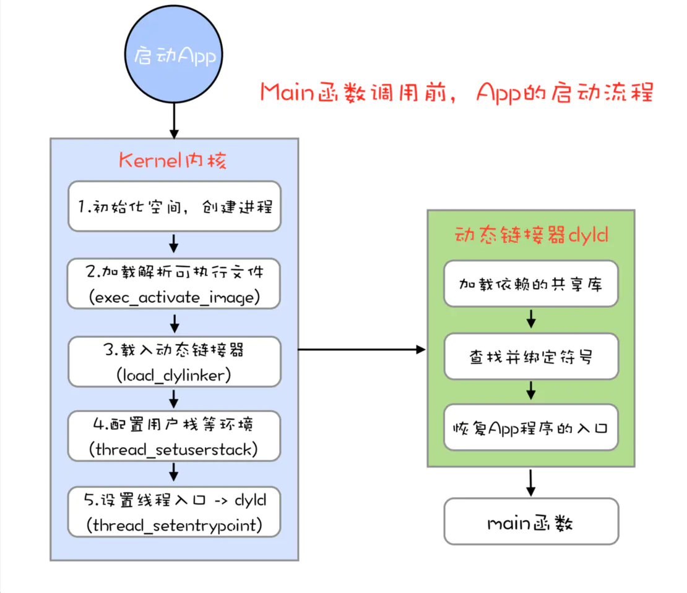
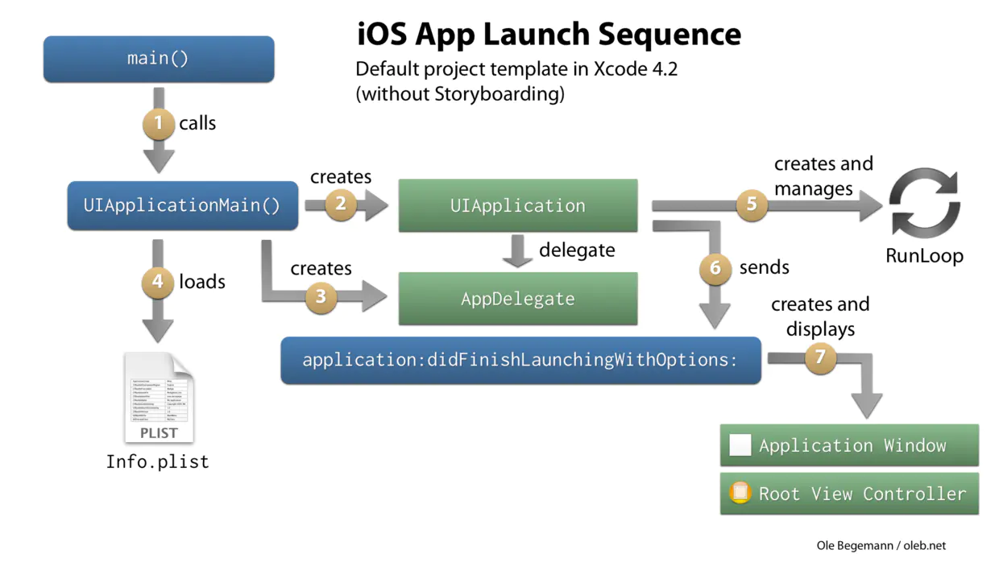

一、“冷启动”与“热启动”
首先，我们先来区分两个启动的概念。
- 冷启动：
App点击启动前，此时App的进程还不在系统里。
需要系统新创建一个进程分配给App。（这是一次完整的App启动过程） - 热启动：
App在冷启动后用户将App退回后台，此时App的进程还在系统里。
用户重新返回App的过程。（热启动做的事较少）
主要区别：
| 名称 | 区别 |
|---|---|
| 冷启动 | 启动时，App的进程不在系统里，需要开启新进程。 |
| 热启动 | 启动时，App的进程还在系统里，不需要开启新进程。 |
二、App的完整启动流程（冷启动流程）
主要分为三个阶段：
main()函数执行前（pre-main阶段）main()函数执行后（从main函数执行，到设置self.window.rootViewController执行完成）- 首屏渲染完成后（从
self.window.rootViewController执行完成到didFinishLaunchWithOptions方法作用域结束）
（1）main函数执行前，系统会做的事：
- 加载可执行文件。（
App里的所有.o文件） - 加载动态链接库，进行
rebase指针调整和bind符号绑定。 ObjC的runtime初始化。 包括：ObjC相关Class的注册、category注册、selector唯一性检查等。- 初始化。 包括：执行
+load()方法、用attribute((constructor))修饰的函数的调用、创建C++静态全局变量等。

简单来说，
App启动后，首先，系统内核（Kernel）创建一个进程。
其次，加载可执行文件。（可执行文件是指Mach-O格式的文件，也就是App中所有.o文件的集合体）这时，能获取到dyld（dyld是苹果的动态链接器）的路径。
然后，加载dyld，主要分为4步：
1 . load dylibs：这一阶段dyld会分析应用依赖的dylib，找到其mach-o文件，打开和读取这些文件并验证其有效性，接着会找到代码签名注册到内核，最后对dylib的每一个segment调用mmap()。
2 . rebase/bind：进行rebase指针调整和bind符号绑定。
3 . ObjC setup：runtime运行时初始化。包括ObjC相关Class的注册、category注册、selector唯一性检查等。
4 . Initializers：调用每个ObjC类与分类的+load方法，调用attribute((constructor))修饰的函数、创建C++静态全局变量。
（2）main函数执行后：
main函数执行后的阶段，指的是：从 main 函数执行开始，到 appDelegate 的 didFinishLaunchingWithOptions方法里首屏渲染相关方法执行完成。 即，从main函数执行到设置self.window.rootViewController执行完成的阶段。
- 首屏初始化所需配置文件的读写操作；
- 首屏列表大数据的读取；
- 首屏渲染的大量计算；

（3）首屏渲染完成后：
首屏渲染完成后的阶段，指的是：didFinishLaunchingWithOptions方法作用域 内执行首屏渲染后的所有方法执行。 即从设置self.window.rootViewController到didFinishLaunchWithOptions方法作用域结束。
这个阶段，首屏已经渲染完成。
需要做的事：
- 初始化一些首屏展示不需要的功能。
- 优化主线程，先处理会卡住主线程的方法，不能影响到用户的后续操作。
三、具体优化思路
用户能感知到的启动时长主要是在 “main函数执行前” 、“main函数执行后到首屏渲染完成”的阶段。
main函数执行前，优化思路如下：
（1）减少使用 +load() 方法
- 方案一：如果可能的话，将
+load中的内容，放到渲染完成后做。 - 方案二：使用
+initialize()的方法代替+load()，注意把逻辑移动到+initialize()时，要注意避免+initialize()的重复调用问题，可以使用dispatch_once()让逻辑只执行一次。
小知识点：
+load()与+initialize()两者的区别?
+load()方法会在main()函数调用前就调用，而+initialize()是在类第一次使用时才会调用。
+load方法的调用优先级: 父类 > 子类 > 分类，并且不会被覆盖，均会调用。
+load方法是在main() 函数之前调用，所有的类文件都会加载，包括分类也会加载。+initialize方法的调用优先级：分类 > 子类，父类 > 子类。（父类的分类重写了+initialize方法会覆盖父类的+initialize方法）
（2）合并多个动态库
苹果公司建议使用更少的动态库，并且建议在使用动态库的数量较多时，尽量将多个动态库进行合并。数量上，苹果公司最多可以支持6个非系统动态库合并为一个。
（3）优化类、方法、全局变量
减少加载启动后不会去使用的类或方法；少用C++全局变量；
main函数执行后，优化方案如下：
（4）优化首屏渲染前的功能初始化
main函数执行后到首屏渲染完成前，只处理首屏渲染相关业务。 首屏渲染外的其他功能放到首屏渲染完成后去初始化。
（5）优化主线程耗时操作，防止屏幕卡顿。
首先检查首屏渲染前，主线程上的耗时操作。将耗时操作滞后或异步处理。 通常的耗时操作有：网络加载、编辑、存储图片和文件等资源。 针对耗时操作做相对应的优化即可。